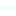

<!doctype html>
<html lang="en">
    <head>
        <meta charset="utf-8">
        <meta http-equiv="X-UA-Compatible" content="IE=edge">
        <meta name="viewport" content="initial-scale=1,user-scalable=no,maximum-scale=1,width=device-width">
        <meta name="mobile-web-app-capable" content="yes">
        <meta name="apple-mobile-web-app-capable" content="yes">
        <link rel="stylesheet" href="css/leaflet.css">
        <link rel="stylesheet" href="css/qgis2web.css"><link rel="stylesheet" href="css/fontawesome-all.min.css">
        <link rel="stylesheet" href="css/leaflet-search.css">
        <link rel="stylesheet" href="css/leaflet-measure.css">
        <style>
        #map {
            width: 1033px;
            height: 805px;
        }
        </style>
        <title>Bhavani Watershed Map</title>
    </head>
    <body>
        <div id="map">
        </div>
        <script src="js/qgis2web_expressions.js"></script>
        <script src="js/leaflet.js"></script>
        <script src="js/leaflet.rotatedMarker.js"></script>
        <script src="js/leaflet.pattern.js"></script>
        <script src="js/leaflet-hash.js"></script>
        <script src="js/Autolinker.min.js"></script>
        <script src="js/rbush.min.js"></script>
        <script src="js/labelgun.min.js"></script>
        <script src="js/labels.js"></script>
        <script src="js/leaflet-measure.js"></script>
        <script src="js/leaflet-search.js"></script>
        <script src="data/Bhavani_1.js"></script>
        <script src="data/Touristspot_2.js"></script>
        <script src="data/Stream_3.js"></script>
        <script src="data/Road_4.js"></script>
        <script>
        var map = L.map('map', {
            zoomControl:true, maxZoom:28, minZoom:1
        }).fitBounds([[10.811739656846976,76.31477101679579],[11.349819099815488,77.01227375988933]]);
        var hash = new L.Hash(map);
        map.attributionControl.setPrefix('<a href="https://github.com/tomchadwin/qgis2web" target="_blank">qgis2web</a> &middot; <a href="https://leafletjs.com" title="A JS library for interactive maps">Leaflet</a> &middot; <a href="https://qgis.org">QGIS</a>');
        var autolinker = new Autolinker({truncate: {length: 30, location: 'smart'}});
        function removeEmptyRowsFromPopupContent(content, feature) {
         var tempDiv = document.createElement('div');
         tempDiv.innerHTML = content;
         var rows = tempDiv.querySelectorAll('tr');
         for (var i = 0; i < rows.length; i++) {
             var td = rows[i].querySelector('td.visible-with-data');
             var key = td ? td.id : '';
             if (td && td.classList.contains('visible-with-data') && feature.properties[key] == null) {
                 rows[i].parentNode.removeChild(rows[i]);
             }
         }
         return tempDiv.innerHTML;
        }
        document.querySelector(".leaflet-popup-pane").addEventListener("load", function(event) {
          var tagName = event.target.tagName,
            popup = map._popup;
          // Also check if flag is already set.
          if (tagName === "IMG" && popup && !popup._updated) {
            popup._updated = true; // Set flag to prevent looping.
            popup.update();
          }
        }, true);
        var measureControl = new L.Control.Measure({
            position: 'topleft',
            primaryLengthUnit: 'meters',
            secondaryLengthUnit: 'kilometers',
            primaryAreaUnit: 'sqmeters',
            secondaryAreaUnit: 'hectares'
        });
        measureControl.addTo(map);
        document.getElementsByClassName('leaflet-control-measure-toggle')[0]
        .innerHTML = '';
        document.getElementsByClassName('leaflet-control-measure-toggle')[0]
        .className += ' fas fa-ruler';
        var bounds_group = new L.featureGroup([]);
        function setBounds() {
        }
        map.createPane('pane_GoogleSatellite_0');
        map.getPane('pane_GoogleSatellite_0').style.zIndex = 400;
        var layer_GoogleSatellite_0 = L.tileLayer('https://mt1.google.com/vt/lyrs=s&x={x}&y={y}&z={z}', {
            pane: 'pane_GoogleSatellite_0',
            opacity: 1.0,
            attribution: '<a href="https://www.google.at/permissions/geoguidelines/attr-guide.html">Map data ©2015 Google</a>',
            minZoom: 1,
            maxZoom: 28,
            minNativeZoom: 0,
            maxNativeZoom: 20
        });
        layer_GoogleSatellite_0;
        map.addLayer(layer_GoogleSatellite_0);
        function pop_Bhavani_1(feature, layer) {
            var popupContent = '<table>\
                    <tr>\
                        <td colspan="2">' + (feature.properties['PERIMETER'] !== null ? autolinker.link(feature.properties['PERIMETER'].toLocaleString()) : '') + '</td>\
                    </tr>\
                    <tr>\
                        <td colspan="2">' + (feature.properties['KERWSDRP_'] !== null ? autolinker.link(feature.properties['KERWSDRP_'].toLocaleString()) : '') + '</td>\
                    </tr>\
                    <tr>\
                        <td colspan="2">' + (feature.properties['KERWSDRP_I'] !== null ? autolinker.link(feature.properties['KERWSDRP_I'].toLocaleString()) : '') + '</td>\
                    </tr>\
                    <tr>\
                        <td colspan="2">' + (feature.properties['WSCODE'] !== null ? autolinker.link(feature.properties['WSCODE'].toLocaleString()) : '') + '</td>\
                    </tr>\
                    <tr>\
                        <td colspan="2">' + (feature.properties['WSCODE1'] !== null ? autolinker.link(feature.properties['WSCODE1'].toLocaleString()) : '') + '</td>\
                    </tr>\
                    <tr>\
                        <td colspan="2">' + (feature.properties['NRIS'] !== null ? autolinker.link(feature.properties['NRIS'].toLocaleString()) : '') + '</td>\
                    </tr>\
                    <tr>\
                        <td colspan="2">' + (feature.properties['WSNAME'] !== null ? autolinker.link(feature.properties['WSNAME'].toLocaleString()) : '') + '</td>\
                    </tr>\
                    <tr>\
                        <td colspan="2">' + (feature.properties['AREA'] !== null ? autolinker.link(feature.properties['AREA'].toLocaleString()) : '') + '</td>\
                    </tr>\
                </table>';
            layer.bindPopup(popupContent, {maxHeight: 400});
            var popup = layer.getPopup();
            var content = popup.getContent();
            var updatedContent = removeEmptyRowsFromPopupContent(content, feature);
            popup.setContent(updatedContent);
        }

        function style_Bhavani_1_0() {
            return {
                pane: 'pane_Bhavani_1',
                opacity: 1,
                color: 'rgba(237,35,35,1.0)',
                dashArray: '',
                lineCap: 'butt',
                lineJoin: 'miter',
                weight: 3.0, 
                fillOpacity: 0,
                interactive: false,
            }
        }
        map.createPane('pane_Bhavani_1');
        map.getPane('pane_Bhavani_1').style.zIndex = 401;
        map.getPane('pane_Bhavani_1').style['mix-blend-mode'] = 'normal';
        var layer_Bhavani_1 = new L.geoJson(json_Bhavani_1, {
            attribution: '',
            interactive: false,
            dataVar: 'json_Bhavani_1',
            layerName: 'layer_Bhavani_1',
            pane: 'pane_Bhavani_1',
            onEachFeature: pop_Bhavani_1,
            style: style_Bhavani_1_0,
        });
        bounds_group.addLayer(layer_Bhavani_1);
        map.addLayer(layer_Bhavani_1);
        function pop_Touristspot_2(feature, layer) {
            var popupContent = '<table>\
                    <tr>\
                        <td colspan="2">' + (feature.properties['NAME'] !== null ? autolinker.link(feature.properties['NAME'].toLocaleString()) : '') + '</td>\
                    </tr>\
                    <tr>\
                        <td colspan="2">' + (feature.properties['latitude'] !== null ? autolinker.link(feature.properties['latitude'].toLocaleString()) : '') + '</td>\
                    </tr>\
                    <tr>\
                        <td colspan="2">' + (feature.properties['longitude'] !== null ? autolinker.link(feature.properties['longitude'].toLocaleString()) : '') + '</td>\
                    </tr>\
                    <tr>\
                        <td colspan="2">' + (feature.properties['PHOTO'] !== null ? '' : '') + '</td>\
                    </tr>\
                </table>';
            layer.bindPopup(popupContent, {maxHeight: 400});
            var popup = layer.getPopup();
            var content = popup.getContent();
            var updatedContent = removeEmptyRowsFromPopupContent(content, feature);
            popup.setContent(updatedContent);
        }

        function style_Touristspot_2_0() {
            return {
                pane: 'pane_Touristspot_2',
                radius: 4.0,
                opacity: 1,
                color: 'rgba(35,35,35,1.0)',
                dashArray: '',
                lineCap: 'butt',
                lineJoin: 'miter',
                weight: 1,
                fill: true,
                fillOpacity: 1,
                fillColor: 'rgba(141,90,153,1.0)',
                interactive: true,
            }
        }
        map.createPane('pane_Touristspot_2');
        map.getPane('pane_Touristspot_2').style.zIndex = 402;
        map.getPane('pane_Touristspot_2').style['mix-blend-mode'] = 'normal';
        var layer_Touristspot_2 = new L.geoJson(json_Touristspot_2, {
            attribution: '',
            interactive: true,
            dataVar: 'json_Touristspot_2',
            layerName: 'layer_Touristspot_2',
            pane: 'pane_Touristspot_2',
            onEachFeature: pop_Touristspot_2,
            pointToLayer: function (feature, latlng) {
                var context = {
                    feature: feature,
                    variables: {}
                };
                return L.circleMarker(latlng, style_Touristspot_2_0(feature));
            },
        });
        bounds_group.addLayer(layer_Touristspot_2);
        map.addLayer(layer_Touristspot_2);
        function pop_Stream_3(feature, layer) {
            var popupContent = '<table>\
                    <tr>\
                        <td colspan="2">' + (feature.properties['ORDER1'] !== null ? autolinker.link(feature.properties['ORDER1'].toLocaleString()) : '') + '</td>\
                    </tr>\
                </table>';
            layer.bindPopup(popupContent, {maxHeight: 400});
            var popup = layer.getPopup();
            var content = popup.getContent();
            var updatedContent = removeEmptyRowsFromPopupContent(content, feature);
            popup.setContent(updatedContent);
        }

        function style_Stream_3_0(feature) {
            switch(String(feature.properties['ORDER1'])) {
                case '1':
                    return {
                pane: 'pane_Stream_3',
                opacity: 1,
                color: 'rgba(85,255,252,1.0)',
                dashArray: '',
                lineCap: 'square',
                lineJoin: 'bevel',
                weight: 1,
                fillOpacity: 0,
                interactive: false,
            }
                    break;
                case '2':
                    return {
                pane: 'pane_Stream_3',
                opacity: 1,
                color: 'rgba(75,184,221,1.0)',
                dashArray: '',
                lineCap: 'square',
                lineJoin: 'bevel',
                weight: 1.0,
                fillOpacity: 0,
                interactive: false,
            }
                    break;
                case '3':
                    return {
                pane: 'pane_Stream_3',
                opacity: 1,
                color: 'rgba(113,177,229,1.0)',
                dashArray: '',
                lineCap: 'square',
                lineJoin: 'bevel',
                weight: 1.0,
                fillOpacity: 0,
                interactive: false,
            }
                    break;
                case '4':
                    return {
                pane: 'pane_Stream_3',
                opacity: 1,
                color: 'rgba(30,135,209,1.0)',
                dashArray: '',
                lineCap: 'square',
                lineJoin: 'bevel',
                weight: 1.0,
                fillOpacity: 0,
                interactive: false,
            }
                    break;
                case '5':
                    return {
                pane: 'pane_Stream_3',
                opacity: 1,
                color: 'rgba(54,102,225,1.0)',
                dashArray: '',
                lineCap: 'square',
                lineJoin: 'bevel',
                weight: 2.0,
                fillOpacity: 0,
                interactive: false,
            }
                    break;
                case '0':
                    return {
                pane: 'pane_Stream_3',
                opacity: 1,
                color: 'rgba(25,29,247,1.0)',
                dashArray: '',
                lineCap: 'square',
                lineJoin: 'bevel',
                weight: 2.0,
                fillOpacity: 0,
                interactive: false,
            }
                    break;
            }
        }
        map.createPane('pane_Stream_3');
        map.getPane('pane_Stream_3').style.zIndex = 403;
        map.getPane('pane_Stream_3').style['mix-blend-mode'] = 'normal';
        var layer_Stream_3 = new L.geoJson(json_Stream_3, {
            attribution: '',
            interactive: false,
            dataVar: 'json_Stream_3',
            layerName: 'layer_Stream_3',
            pane: 'pane_Stream_3',
            onEachFeature: pop_Stream_3,
            style: style_Stream_3_0,
        });
        bounds_group.addLayer(layer_Stream_3);
        map.addLayer(layer_Stream_3);
        function pop_Road_4(feature, layer) {
            var popupContent = '<table>\
                    <tr>\
                        <td colspan="2">' + (feature.properties['NAME'] !== null ? autolinker.link(feature.properties['NAME'].toLocaleString()) : '') + '</td>\
                    </tr>\
                    <tr>\
                        <td colspan="2">' + (feature.properties['Length'] !== null ? autolinker.link(feature.properties['Length'].toLocaleString()) : '') + '</td>\
                    </tr>\
                </table>';
            layer.bindPopup(popupContent, {maxHeight: 400});
            var popup = layer.getPopup();
            var content = popup.getContent();
            var updatedContent = removeEmptyRowsFromPopupContent(content, feature);
            popup.setContent(updatedContent);
        }

        function style_Road_4_0() {
            return {
                pane: 'pane_Road_4',
                opacity: 1,
                color: 'rgba(196,60,57,1.0)',
                dashArray: '',
                lineCap: 'square',
                lineJoin: 'bevel',
                weight: 1.0,
                fillOpacity: 0,
                interactive: false,
            }
        }
        map.createPane('pane_Road_4');
        map.getPane('pane_Road_4').style.zIndex = 404;
        map.getPane('pane_Road_4').style['mix-blend-mode'] = 'normal';
        var layer_Road_4 = new L.geoJson(json_Road_4, {
            attribution: '',
            interactive: false,
            dataVar: 'json_Road_4',
            layerName: 'layer_Road_4',
            pane: 'pane_Road_4',
            onEachFeature: pop_Road_4,
            style: style_Road_4_0,
        });
        bounds_group.addLayer(layer_Road_4);
        map.addLayer(layer_Road_4);
            var title = new L.Control();
            title.onAdd = function (map) {
                this._div = L.DomUtil.create('div', 'info');
                this.update();
                return this._div;
            };
            title.update = function () {
                this._div.innerHTML = '<h2>Bhavani Watershed Map</h2>';
            };
            title.addTo(map);
            var abstract = new L.Control({'position':'bottomleft'});
            abstract.onAdd = function (map) {
                this._div = L.DomUtil.create('div',
                'leaflet-control abstract');
                this._div.id = 'abstract'

                    abstract.show();
                    return this._div;
                };
                abstract.show = function () {
                    this._div.classList.remove("abstract");
                    this._div.classList.add("abstractUncollapsed");
                    this._div.innerHTML = 'This webpage is created by sumangala ';
            };
            abstract.addTo(map);
        var baseMaps = {};
        L.control.layers(baseMaps,{' Road': layer_Road_4,'Stream<br /><table><tr><td style="text-align: center;"></td><td>1</td></tr><tr><td style="text-align: center;"></td><td>2</td></tr><tr><td style="text-align: center;"></td><td>3</td></tr><tr><td style="text-align: center;"></td><td>4</td></tr><tr><td style="text-align: center;"></td><td>5</td></tr><tr><td style="text-align: center;"></td><td>0</td></tr></table>': layer_Stream_3,' Tourist spot': layer_Touristspot_2,' Bhavani': layer_Bhavani_1,"Google Satellite": layer_GoogleSatellite_0,}).addTo(map);
        setBounds();
        var i = 0;
        layer_Touristspot_2.eachLayer(function(layer) {
            var context = {
                feature: layer.feature,
                variables: {}
            };
            layer.bindTooltip((layer.feature.properties['NAME'] !== null?String('<div style="color: #d50000; font-size: 11pt; font-weight: bold; font-family: \'Times New Roman\', sans-serif;">' + layer.feature.properties['NAME']) + '</div>':''), {permanent: true, offset: [-0, -16], className: 'css_Touristspot_2'});
            labels.push(layer);
            totalMarkers += 1;
              layer.added = true;
              addLabel(layer, i);
              i++;
        });
        map.addControl(new L.Control.Search({
            layer: layer_Touristspot_2,
            initial: false,
            hideMarkerOnCollapse: true,
            propertyName: 'NAME'}));
        document.getElementsByClassName('search-button')[0].className +=
         ' fa fa-binoculars';
        resetLabels([layer_Touristspot_2]);
        map.on("zoomend", function(){
            resetLabels([layer_Touristspot_2]);
        });
        map.on("layeradd", function(){
            resetLabels([layer_Touristspot_2]);
        });
        map.on("layerremove", function(){
            resetLabels([layer_Touristspot_2]);
        });
        </script>
    </body>
</html>
